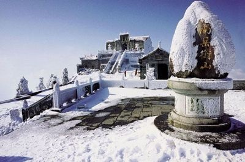
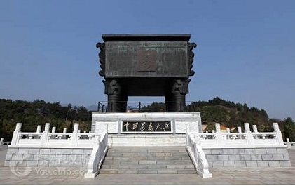
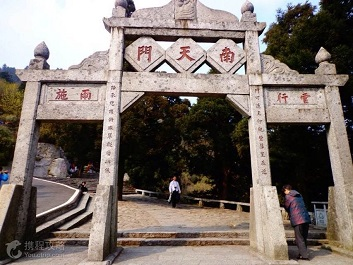
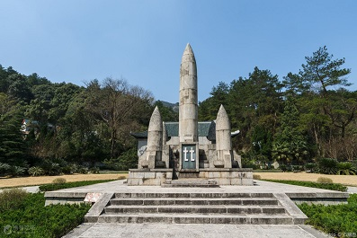

衡阳是中国优秀旅游城市、中国抗战纪念城市，境内旅游资源较为丰富。南岳忠烈祠、南岳大庙、蔡侯祠、王家祠堂、衡州窑、云集窑、水口山铅锌矿冶遗址、王氏宗祠、王船山故居及墓、罗荣桓故居、湘南学联旧址被列为国家级文物保护单位。
“雁峰烟雨”、“石鼓江山”、“朱陵后洞”、“青草渔家”、“花药春溪”、“岳屏雪弄”、“东洲桃浪”、“西湖白莲”被称为衡州八景。

祝融峰是衡山的最高峰，是我国纪念人文祖先祝融氏的山峰。“祝融峰之高”为南岳风光“四绝”之首。由于常年烟云的烘托和群峰的叠衬，加之它矗立于地势相对低洼的湘南盆地之中，更显得它峻极天穹。

驾鹤峰群山环抱，仙鹤来朝，钟灵毓秀，蕴玉藏珠,群芳飘香，万绿滴翠。中华万寿大鼎就座落于其上。当此鼎落成之日,成群的仙鹤从四面八方飞来,在天空上下翻飞,构成了世人罕见的奇观.

在湖南省衡阳市南岳区的南岳衡山，土人称为横峰，当冈峦之脊，实中分南岳，其阳曰前山，阴曰後山，自岳庙迤逦上，仰见最高处，即南 天门，不能见祝融而，及登南天门，则祝融突见眼前，循山阴下，再折而上，方登祝融峰。

衡阳抗日英雄纪念碑坐落于衡阳市市区岳屏公园岳屏山上·碑上书有蒋中正先生（蒋介石先生）亲笔的"抗日英雄永垂不朽",旁边还有蒋中正先生的落款·